Definiție: Fenolii sunt compuși organici, care conțin gruparea funcțională hidroxil (–OH) legată de un atom de carbon al unui nucleu aromatic. Fenolii au formula generală: Ar – OH.
Fenolii sunt izomeri de funcțiune cu alcoolii aromatici sau polinesaturați și cu eterii micști.
Clasificare:
După numărul de grupe hidroxil din moleculă, pot fi:
fenoli monohidroxilici: 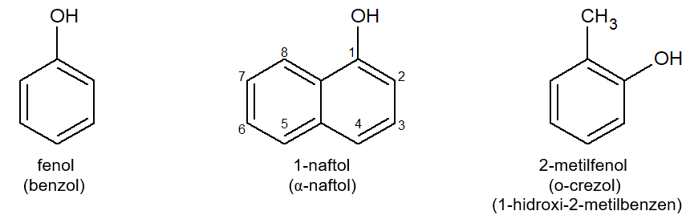
fenoli polihidroxilici: 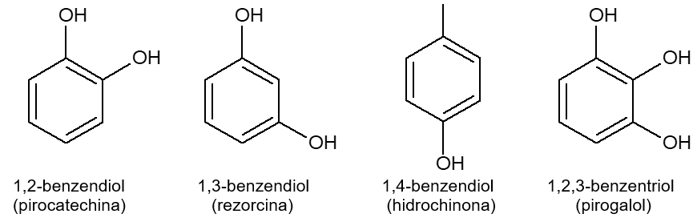
După numărul de cicluri aromatice din moleculă, fenolii pot fi :
fenoli care provin de la benzen (cu un singur nucleu aromatic);
fenoli care provin de la naftalină (cu două cicluri aromatice condensate).
Metode de obținere
Topirea sărurilor acizilor sulfonici ai arenelor cu hidroxizi alcalini
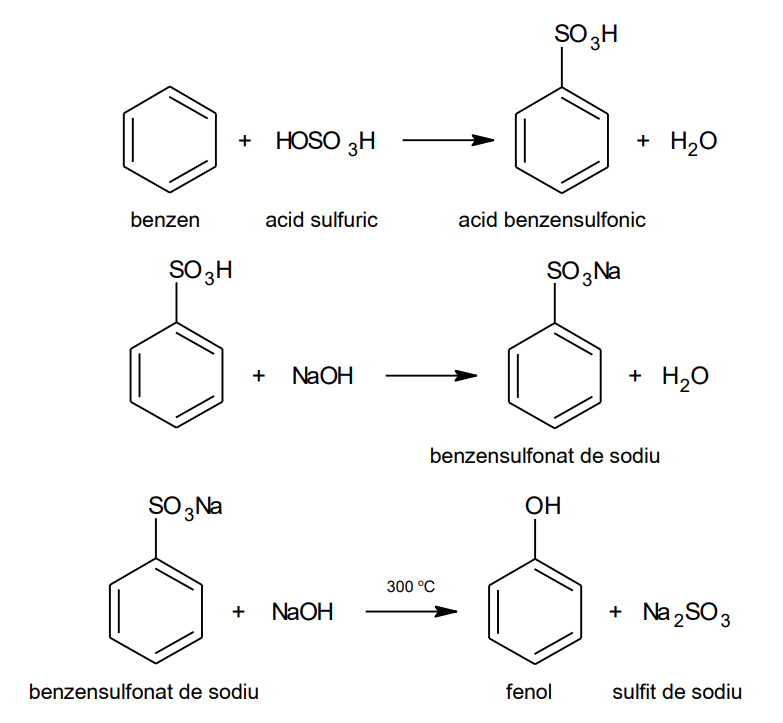
Această metodă se aplică în special pentru obținerea naftolilor.
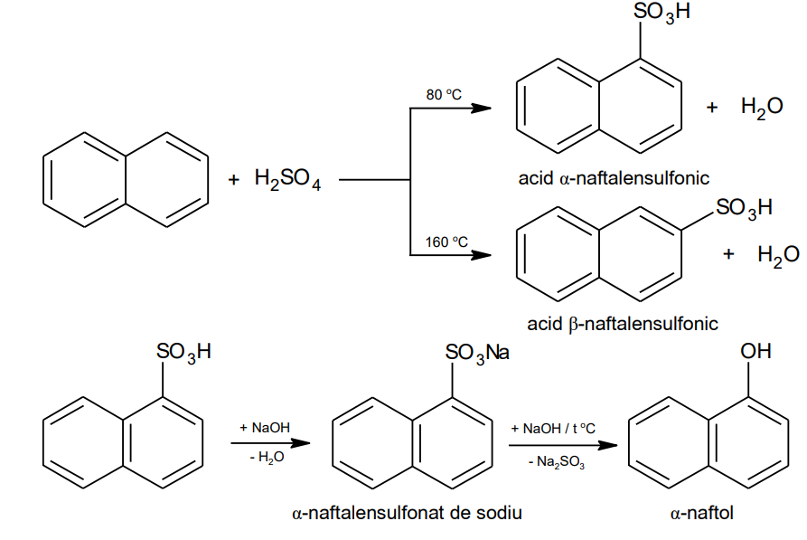
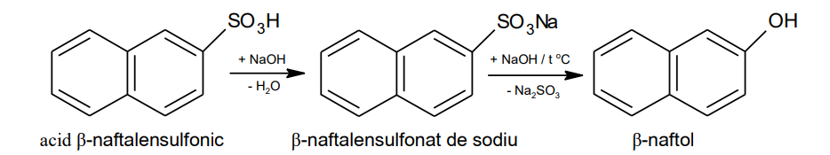
Oxidarea izopropilbenzenului
Este o metodă aplicată industrial. Prin alchilarea benzenului cu propenă (obținută din gazele de cracare) se obține izopropilbenzen. Acesta (cumenul) prin oxidare la 120 0C cu oxigen molecular, formează hidroperoxid de cumen, care în prezența acidului sulfuric diluat trece în fenol și acetonă.
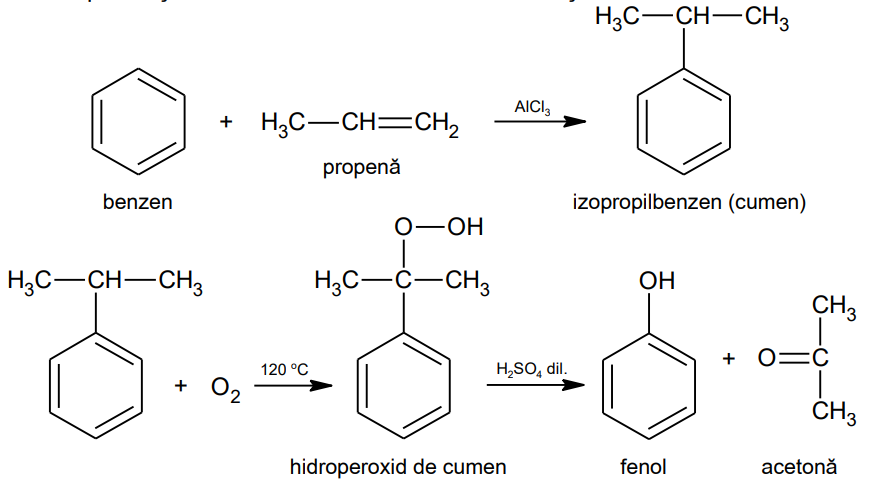
Reacția de hidroliză
hidroliza sărurilor de diazoniu
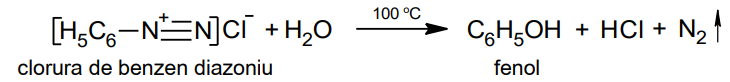
hidroliza bazică a clorobenzenului
Rar folosită din cauza condițiilor energice de lucru (derivat halogenat cu reactivitate scăzută legătura C – Cl este foarte puternică și greu de rupt):
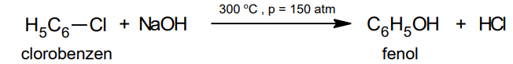
Proprietăți fizice
La temperatura obișnuită fenolii sunt substanțe solide, cristaline, cu miros caracteristic pătrunzător (naftolii sunt inodori). Punctele de topire cresc cu creșterea numărului de grupe – OH din moleculă. Fenolul are p.t. = + 43°C.
În fenoli apar legături de hidrogen intermoleculare și intramoleculare (dacă structura permite – de ex. la pirocatechina, pirogalol, etc.)
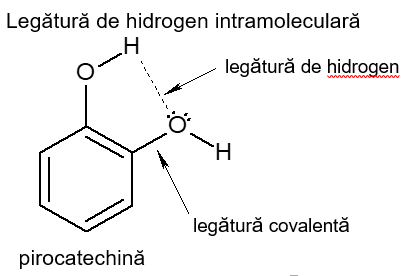
Solubilitatea fenolilor în apă crește cu creșterea numărului de grupe hidroxil din moleculă (polifenolii sunt solubili în apă) și scade cu creșterea catenei. Fenolii monohidroxilici sunt puțin solubili în apă (de ex. fenolul 6,7%, iar crezolii sub 2%).
Fenolul proaspăt preparat se prezintă sub formă de cristale incolore, higroscopice. în aer se autooxidează și cristalele se colorează în roșu brun. Este toxic și se manipulează cu atenție, deoarece produce arsuri. Crezolii au proprietăți bactericide mai puternice decât fenolul.
Proprietăți chimice
Proprietățile chimice ale fenolilor se datorează influenței reciproce dintre nucleul aromatic și grupa funcțională hidroxil (– OH) din molecula ei.
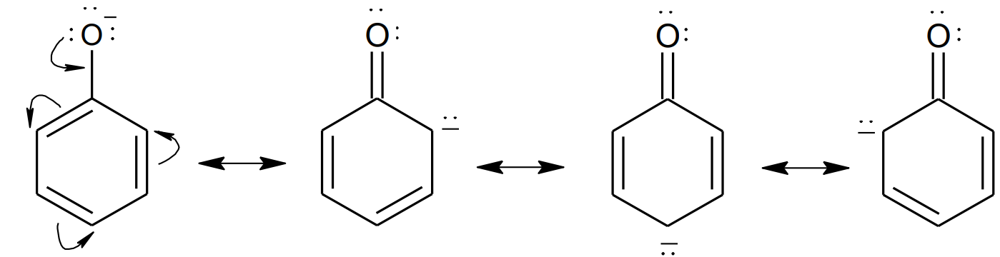
Grupa hidroxil legată de un atom de carbon al unui nucleu aromatic, accentuează atragerea electronilor din legătura hidroxil (– O – H) de atomul de oxigen. Iar această atracție conduce la slăbirea legăturii dintre oxigen și hidrogen și la creșterea caracterului acid al fenolilor. Fenolii participă la două tipuri de reacții:
reacții determinate de prezența grupei hidroxil (comune cu alcoolii);
reacții determinate de nucleul benzenic (reacții asemănătoare cu arenele)
Reacții determinate de grupa hidroxil (– OH)
Caracterul acid al fenolilor Fenolii au un caracter foarte slab acid. Față de alcooli care reacționează numai cu metalele alcaline, fenolii reacționează și cu hidroxizii alcalini formând fenoxizi. 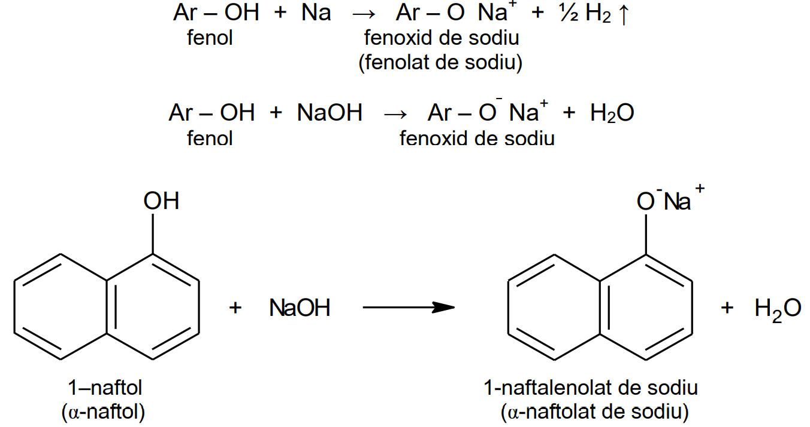 Faptul că fenolii reacționează atât cu matalele alcaline cât și cu hidroxizii, dovedește că au un caracter acid mai pronunțat decât alcoolii. Acest lucru se datorează influenței nucleului aromatic asupra grupei hidroxil (– OH) mărind aciditatea fenolilor. Ionul fenoxid (C6H5O - ) este stabil în mediu apos, iar în reacție cu acizii formează fenol. 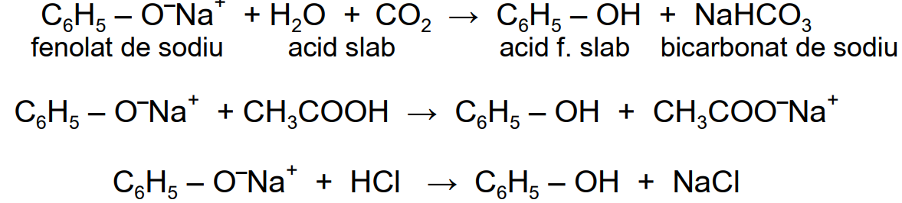
Reacția de esterificare Fenolii nu reacționează direct cu acizii carboxilici cum se întâmplă în cazul alcoolilor, ci indirect cu derivați ai acizilor, cum ar fi: cloruri acide sau anhidride. 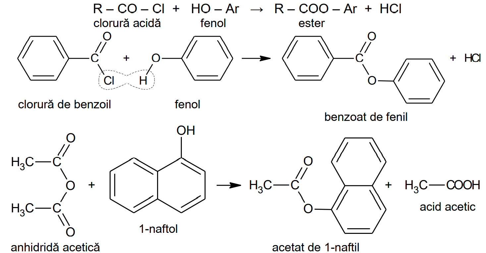 Asemănător se obține aspirina, prin reacția acidului salicilic (acid 2- hidroxibenzoic) cu anhidrida acetică sau clorura de acetil. Acidul salicilic este un compus organic cu două grupe funcționale: grupa carboxil și grupa hidroxil. 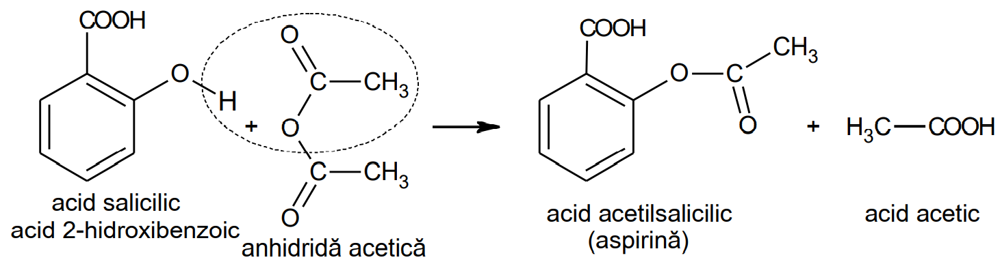 Esteri se pot obține și prin reacția dintre un fenoxid alcalin și o clorură sau o anhidridă a unui acid carboxilic. 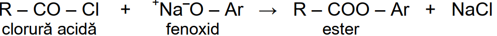
Reacția de eterificare Eteri simpli sau micști se pot obține prin reacția dintre fenoxizi și derivații halogenați. 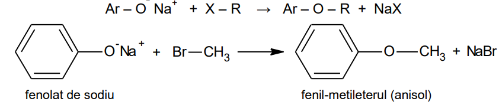
Reacția de oxidare Fenolii se pot oxida cu oxigen din aer (autooxidare) sau cu agenți oxidanți, formând compuși cetonici (chinone). Exemple de reacții de oxidare și de autooxidare (cu oxigen din aer): 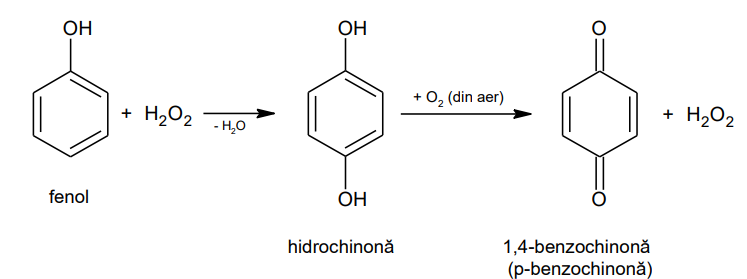 Exemplu de reacție de oxidare cu agenți oxidanți la hidrochinonă: 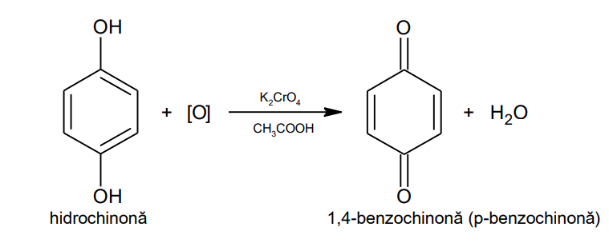
Reacții de culoare Fenolii reacționează cu soluție apoasă de clorură ferică, formând combinații complexe de diferite culori. În funcție de culoarea obținută putem identifica fenolul. De exemplu:
roșu-violet (violet) pentru: fenol, α-naftol, rezorcină, acid salicilic, aldehida salicilică, o și p-hidroxibenzaldehida;
Reacții de substituție Fenolii dau mai ușor reacții de substituție decât arenele de la care provin din cauza influenței grupei hidroxil. - Halogenarea fenolului Halogenarea fenolului, care se poate face cu Cl2 , Br2 și I2 , nu necesită catalizatori (față de halogenarea benzenului). Clorurarea sau bromurarea fenolului se fac la rece în diferiți solvenți și rezultă amestecuri de derivați di și trihalogenați. Grupa hidroxil (– OH) este un substituient de ordinul I, deci va orienta intrarea celui de-al doilea substituient în pozițiile orto și para. 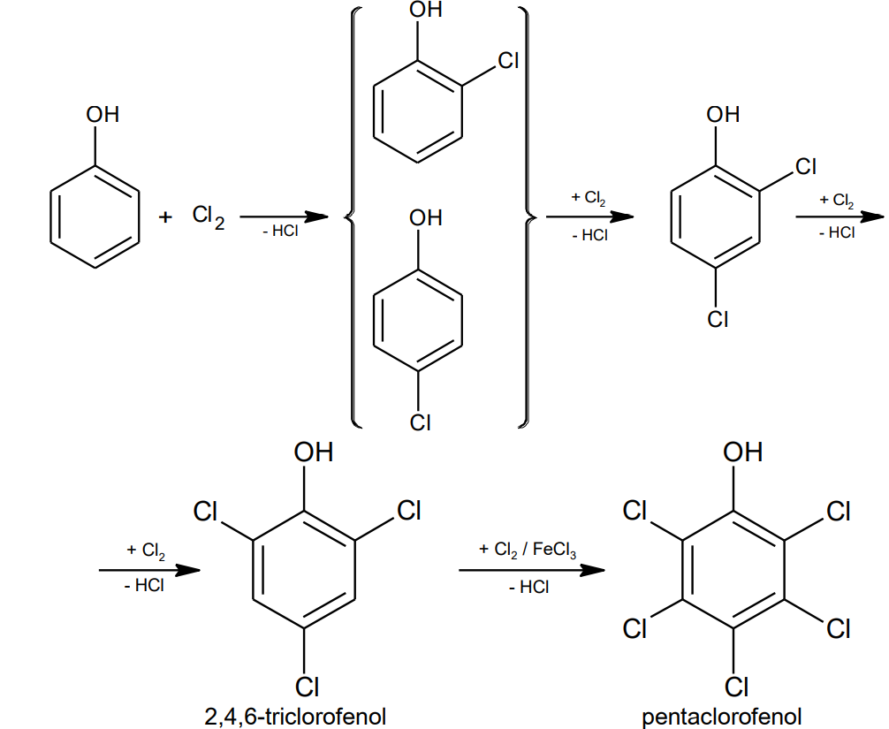 În ultima etapă a halogenării (pentru obținerea pentahalogenofenolului), pentru substituirea ultimilor doi atomi de hidrogen, se folosesc catalizatorii: FeCl3 , AlCl3 , FeBr3 . Reacția de bromurare are loc asemănător cu clorurarea, cu precizarea că dacă bromurarea se efectuează cu apă de brom, în prezență de hidroxizi alcalini (NaOH), se obține direct 2,4,6-tribromofenolul, sub forma unui precipitat alb (reacție folosită la dozarea cantitativă a fenolului): 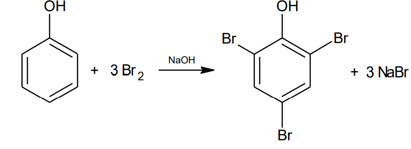 - Nitrarea fenolului Nitrarea fenolului se face cu acid azotic diluat (mult mai ușor decât nitrarea benzenului, care se face cu amestec sulfonitric). Cu exces de reactiv (acid azotic) sau cu acid concentrat se formează acidul picric. 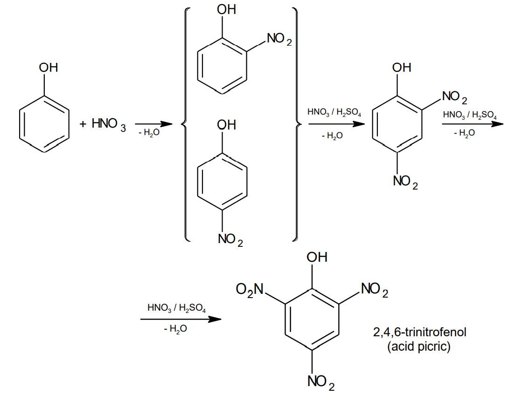